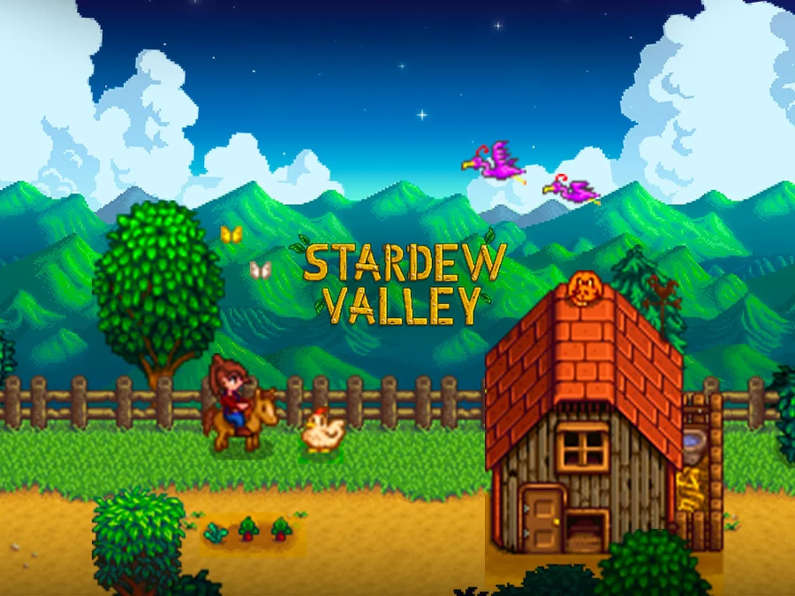

Stardew Valley is a 2016 farm life simulation game by ConcernedApe, where players inherit a dilapidated farm in the eponymous valley. Balancing crop cultivation, animal care, mining, fishing, and relationships with townsfolk, players can restore the community and explore mysterious caves.
This game is one of my favorite games of all time. The game has a wonderful use of pixel art. This makes the game look simple yet good looking. I also love the type of music it has for its soundtrack. I myself have many times found myself just on the main menu listening to the relaxing music. This game is a wonderful game to sit down and relax with. I would highly recommend this game for anyone looking for a slow relaxing game to play.